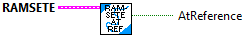
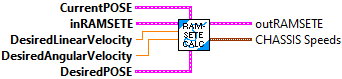
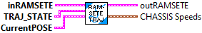
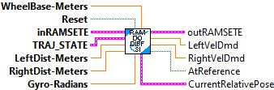
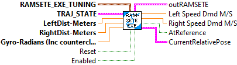
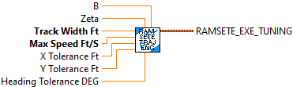
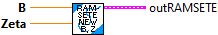
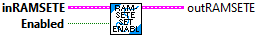

Returns true if the pose error is within tolerance of the reference.
Parameters:
- Ramsete - Ramsete data structure
Returns:
- At Reference - Return value

Returns the next output of the Ramsete controller.
The reference pose, linear velocity, and angular velocity should come from a drivetrain trajectory.
Parameters:
- InRamsete - Ramsete data structure
- currentPose - The current pose.
- poseRef - The desired pose.
- linearVelocity - The desired linear velocity in meters/sec.
- angularVelocity - The desired angular velocity in radians/second.
Returns:
- Out Ramsete -- Updated Ramsete data structure
- Chassis Speeds

Returns the next output of the Ramsete controller.
The reference pose, linear velocity, and angular velocity should come from a drivetrain trajectory.
Parameters:
- InRamsete - Ramsete data structure
- TrajState - Desired trajectory state
- currentPose - The current pose.
Returns:
- Out Ramsete -- Updated Ramsete data structure
- Chassis Speeds
This is a convience function that takes sensor data, and trajectory demands, then performs differential drive odometry, and executes ramsete control to output wheel speed demands.
All input and output units are Feet, Degrees. The TrajectoryState units are Meters,Radians
Parameters:
- InRamsete - Ramsete data structure
- LeftDist - Left wheel distance
- RightDist - Right wheel distance
- Gyro - Robot gyro reading
- Reset - Reset's the internal saved robot position, left / right distance, and gyro readings. This should be set true at the beginning of executing a trajectory.
- TrajState - The desired trajectory state
- WheelBase - The robot wheel base
Returns:
- outRamsete - Updated Ramsete data structure
- AtReference - TRUE when robot position is withing tolerance
- CurrentPose - Current robot Pose
- LeftVelDmd - Left wheel velocity demand (These demands are NOT normalized.)
-RightVelDmd - Right wheel velocity demand (These demands are NOT normalized.)

This is a convience function that takes sensor data, and trajectory demands, then performs differential drive odometry, and executes ramsete control to output wheel speed demands.
All input and output units are Meters, Radians.
Parameters:
- InRamsete - Ramsete data structure
- LeftDist - Left wheel distance
- RightDist - Right wheel distance
- Gyro - Robot gyro reading
- Reset - Reset's the internal saved robot position, left / right distance, and gyro readings. This should be set true at the beginning of executing a trajectory.
- TrajState - The desired trajectory state
- WheelBase - The robot wheel base
Returns:
- outRamsete - Updated Ramsete data structure
- AtReference - TRUE when robot position is withing tolerance
- CurrentPose - Current robot Pose
- LeftVelDmd - Left wheel velocity demand (These demands are NOT normalized.)
-RightVelDmd - Right wheel velocity demand (These demands are NOT normalized.)

Convienience function to create and calculate the ramsete control, returning normalized desired left and right speed setpoints
Parameters:
- Ramsete EXE Tuning -- Packed data cluster containing the ramsete tuning parameters and Differntial Drive kinematics information.
- TrajState - Desired trajectory state
- Left Dist -- The left distance read from encoders (Meters). The encoders do NOT have to be reset at the beginning of trajectory execution.
- Right Dist -- The right distance read from encoders (Meters). The encoders do NOT have to be reset at the beginning of trajectory execution.
- Gyro - The current reading of a gyro whose value increases counter clockwise. (You may need to negate your gyro reading.) (Radians)
- Reset -- Resets the current robot pose and the beginning left and right distances and the gyro reading
- Enabled -- When enabled uses the ramsete closed loop control to drive the left and right speed demand outputs. When disabled the trajectory data is directly converted to left and right speed demands.
Returns:
- Left Speed Dmd -- Left Speed demand (Meters/Second)
- Right Speed Dmd -- Right Speed demand (Meters/Second)
- Out Ramsete -- Updated Ramsete data structure
- Current Relative Pose -- Current robot relative pose. This pose is reset to zero when the RESET input is set to TRUE.
- At Reference -- Set to TRUE when the current robot pose is withing the specified tolerance of the desired POSE from the trajectory state input.

Convienience function to create and calculate the ramsete control, returning normalized desired left and right speed setpoints
This is designed for ENG units -- Feet, degrees.
Parameters:
- Ramsete EXE Tuning -- Packed data cluster containing the ramsete tuning parameters and Differntial Drive kinematics information.
- TrajState - Desired trajectory state
- Left Dist -- The left distance read from encoders (Feet). The encoders do NOT have to be reset at the beginning of trajectory execution.
- Right Dist -- The right distance read from encoders (Feet). The encoders do NOT have to be reset at the beginning of trajectory execution.
- Gyro - The current reading of a gyro whose value increases counter clockwise. (You may need to negate your gyro reading.) (Degrees)
- Reset -- Resets the current robot pose and the beginning left and right distances and the gyro reading
- Enabled -- When enabled uses the ramsete closed loop control to drive the left and right speed demand outputs. When disabled the trajectory data is directly converted to left and right speed demands.
Returns:
- Left Speed Dmd -- Left Speed demand (Feet/Second)
- Right Speed Dmd -- Right Speed demand (Feet/Second)
- Out Ramsete -- Updated Ramsete data structure
- Current Relative Pose -- Current robot relative pose. This pose is reset to zero when the RESET input is set to TRUE.
- At Reference -- Set to TRUE when the current robot pose is withing the specified tolerance of the desired POSE from the trajectory state input.

Packs tuning parameters for the Ramsete EXE VI (Which is designed for a differential drive robot)
Inputs:
- b - Tuning parameter (b > 0), radians^2 / meters^2, for which larger values make convergence more aggressive like a proportional term. (Default 2.0)
- zeta - Tuning parameter (0 <; zeta < 1), / radians, for which larger values provide more damping in response. (Default 07 )
- track width -- distance between right and left wheels on a differential drive robot (Meters)
- Max Speed -- The maximum wheel speed (Meters/Second)
- X Tolerance -- The desired allowable X position deviation (Meters). This is only used to calculate At Reference. (Default 0.051)
- Y Tolerance -- The desired allowable Y position deviation (Meters). This is only used to calculate At Reference. (Default 0.051)
- Heading Tolerance -- The desired allowable rotation deviation (Radians). This is only used to calculate At Reference. (Default 0.035)
Outputs:
- Ramseete EXE tuning -- Data cluster to be used as input to the Ramsete EXE VI.

Packs tuning parameters for the Ramsete EXE ENG VI (Which is designed for a differential drive robot) This version is intended for ENG units (Feet, Degrees)
Inputs:
- b - Tuning parameter (b > 0), radians^2 / meters^2, for which larger values make convergence more aggressive like a proportional term. (Default 2.0)
- zeta - Tuning parameter (0 <; zeta < 1), / radians, for which larger values provide more damping in response. (Default 07 )
- track width -- distance between right and left wheels on a differential drive robot (Feet)
- Max Speed -- The maximum wheel speed (Feet/Second)
- X Tolerance -- The desired allowable X position deviation (Feet). This is only used to calculate At Reference. (Default 0.083)
- Y Tolerance -- The desired allowable Y position deviation (Feet). This is only used to calculate At Reference. (Default 0.083)
- Heading Tolerance -- The desired allowable rotation deviation (Degrees). This is only used to calculate At Reference. (Default 1.0)
Outputs:
- Ramseete EXE tuning -- Data cluster to be used as input to the Ramsete EXE ENG VI.

Construct a Ramsete unicycle controller. The default arguments for b and zeta of 2.0 and 0.7 have been well-tested to produce desireable results.
Ramsete is a nonlinear time-varying feedback controller for unicycle models that drives the model to a desired pose along a two-dimensional trajectory. Why would we need a nonlinear control law in addition to the linear ones we have used so far like PID? If we use the original approach with PID controllers for left and right position and velocity states, the controllers only deal with the local pose. If the robot deviates from the path, there is no way for the controllers to correct and the robot may not reach the desired global pose. This is due to multiple endpoints existing for the robot which have the same encoder path arc lengths.
Instead of using wheel path arc lengths (which are in the robot's local coordinate frame), nonlinear controllers like pure pursuit and Ramsete use global pose. The controller uses this extra information to guide a linear reference tracker like the PID controllers back in by adjusting the references of the PID controllers.
The paper "Control of Wheeled Mobile Robots: An Experimental Overview" describes a nonlinear controller for a wheeled vehicle with unicycle-like kinematics; a global pose consisting of x, y, and theta; and a desired pose consisting of x_d, y_d, and theta_d. We call it Ramsete because that's the acronym for the title of the book it came from in Italian ("Robotica Articolata e Mobile per i SErvizi e le TEcnologie").

Construct a Ramsete unicycle controller.
Ramsete is a nonlinear time-varying feedback controller for unicycle models that drives the model to a desired pose along a two-dimensional trajectory. Why would we need a nonlinear control law in addition to the linear ones we have used so far like PID? If we use the original approach with PID controllers for left and right position and velocity states, the controllers only deal with the local pose. If the robot deviates from the path, there is no way for the controllers to correct and the robot may not reach the desired global pose. This is due to multiple endpoints existing for the robot which have the same encoder path arc lengths.
Instead of using wheel path arc lengths (which are in the robot's local coordinate frame), nonlinear controllers like pure pursuit and Ramsete use global pose. The controller uses this extra information to guide a linear reference tracker like the PID controllers back in by adjusting the references of the PID controllers.
The paper "Control of Wheeled Mobile Robots: An Experimental Overview" describes a nonlinear controller for a wheeled vehicle with unicycle-like kinematics; a global pose consisting of x, y, and theta; and a desired pose consisting of x_d, y_d, and theta_d. We call it Ramsete because that's the acronym for the title of the book it came from in Italian ("Robotica Articolata e Mobile per i SErvizi e le TEcnologie").
Parameters:
- b - Tuning parameter (b > 0), radians^2 / meters^2, for which larger values make convergence more aggressive like a proportional term. (Default 2.0)
- zeta - Tuning parameter (0 <; zeta < 1), / radians, for which larger values provide more damping in response. (Default 07 )
Returns:
- out Ramsete - Ramsete data structure

Returns sin(x) / x
When x is close to zero a special approximation calculation is used. Otherwise Sin(x)/X is used.
Parameters:
- X - Input value

Enables and disables the controller for troubleshooting purposes.
Parameters:
- InRamsete - Ramsete data structure
- enabled - Set TRUE to enable closed loop Ramsete control.
Returns:
- OutRamsete - Updated Ramsete data structure

Sets the pose error which is considered tolerable for use with atReference().
Parameters:
- in Ramsete - Ramsete data structure
- poseTolerance - Pose error which is tolerable.
Returns:
- out Ramsete - Updated Ramsete data structure